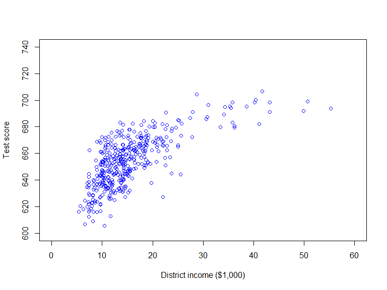
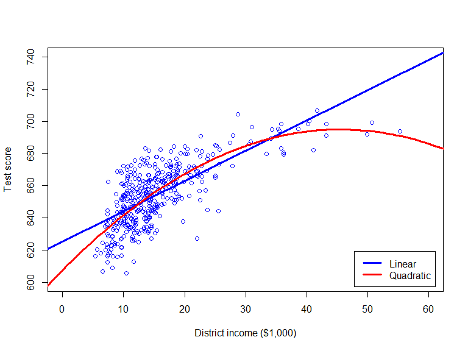

Based on Stock and Watson, ch. 8

\[Score_i = 625 + 1.88 Income_i + \hat{u}_i\]
At low income levels, additional income increases test scores by a lot, but at high income levels, the effect of income on test scores is very modest
A regression function linear in \(Income\) fail to capture this phenomenon; need nonlinear regression function
Effect can vary with the regressor itself
Effect can vary with another regressor
Consider the polynomial (quadratic) regression model
\[Score_i = \underset{E(Score_i|Income_i)}{\underbrace{\beta_0 + \beta_1 Income_i + \beta_2 Income_i^2}} + u_i\]
The polynomial regression model is linear in the parameters \(\beta_0\), \(\beta_1\), and \(\beta_2\), but nonlinear in \(Income\)
The change in \(Score_i\) following small change in \(Income_i\) is:
\[\lim_{\Delta Income_i \rightarrow 0}\frac{\Delta Score_i}{\Delta Income_i} = \beta_1 + 2 \beta_2 Income_i\]
The effect of \(Income\) on \(Score\) varies with \(Income\) in the polynomial regression model
## Parameter | Coefficient | SE | 95% CI | t | df | p
## ---------------------------------------------------------------------------
## (Intercept) | 625.38 | 1.53 | [622.37, 628.40] | 408.11 | 418 | < .001
## income | 1.88 | 0.09 | [ 1.70, 2.06] | 20.76 | 418 | < .001## Parameter | Coefficient | SE | 95% CI | t | df | p
## ---------------------------------------------------------------------------
## (Intercept) | 607.30 | 3.05 | [601.31, 613.29] | 199.36 | 417 | < .001
## income | 3.85 | 0.30 | [ 3.25, 4.45] | 12.66 | 417 | < .001
## income2 | -0.04 | 0.01 | [ -0.05, -0.03] | -6.76 | 417 | < .001
How do test whether the effect of income is statistically significant in the polynomial regression model?
\[H_0: \, \beta_1 = \beta_2 = 0; \quad H_1: \, \beta_1 \neq 0 \text{ or } \beta_2 \neq 0\]
This is a joint hypothesis, which we can test by an \(F\)-test
## Linear hypothesis test
##
## Hypothesis:
## income = 0
## income2 = 0
##
## Model 1: restricted model
## Model 2: Score ~ income + income2
##
## Note: Coefficient covariance matrix supplied.
##
## Res.Df Df F Pr(>F)
## 1 419
## 2 417 2 428.52 < 2.2e-16 ***
## ---
## Signif. codes: 0 '***' 0.001 '**' 0.01 '*' 0.05 '.' 0.1 ' ' 1How do test whether the effect of income is linear in the polynomial regression model?
\[H_0: \, \beta_2 = 0; \quad H_1: \, \text{ or } \beta_2 \neq 0\]
This hypothesis involves a single restriction, which we can test by an \(t\)-test
Regression models with nonlinear regression functions allow for the effect of a regressor to be non-constant:
Effect can vary with the regressor itself
Effect can vary with another regressor
The polynomial regression model offers a convenient way to introduce nonlinear regression functions where the effect of the regressor varies with the regressor itself
This can also be achieved using linear-log, log-linear or log-log models (covered in pre-recorded lecture snippets)
Interaction regressions covered in next week’s seminar